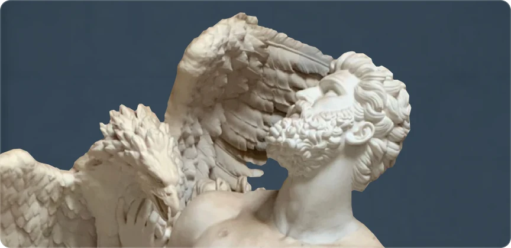
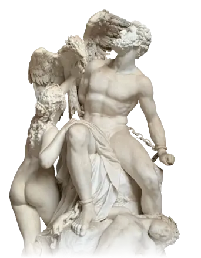

Expositions
Vous préparez une exposition ? La galerie vous accompagne dans votre projet.
Chaque sculpture se découvre aussi dans les détails.

Paul Dechewsky travaille dans le milieu artistique depuis plus de trente ans. La galerie MOMOA prolonge cette activité avec une collection consacrée à la sculpture grecque et à ses héritages.
Paul Dechewsky, responsable de la galerie
MOMOA est une galerie fictive conçue dans le cadre d’un projet universitaire.

Vous préparez une exposition ? La galerie vous accompagne dans votre projet.

Des présentations commentées pour comprendre l’histoire des œuvres et les détails à observer.
Paris · Galerie fictive
Consulter les questions fréquentesPour suivre les expositions et les œuvres présentées.
S’inscrireDans le cadre fictif de la galerie MOMOA, imaginer une exposition commence par le choix d’un fil conducteur. Le mouvement permet de rapprocher deux œuvres. La Victoire de Samothrace paraît se poser sur la proue d’un navire, alors que le Discobole retient son geste juste avant le lancer. En plaçant ces deux images côte à côte, on peut observer comment une pose et un drapé suggèrent deux moments très différents.
Commencez par repérer la silhouette et la direction du corps. Suivez ensuite une ligne précise, comme le bras du Discobole ou les plis qui se soulèvent autour de la Victoire. Revenez à l’image entière pour voir comment ce détail change votre perception de la pose. Pour Athéna, le casque se repère dans l’ensemble, puis la tête de Gorgone sur l’égide apporte un indice plus précis. La notice permet de mettre des mots sur ce que vous avez remarqué.
Une collection consacrée à la sculpture grecque et à ses héritages réunit des œuvres de périodes différentes. La notice du Discobole distingue la copie romaine en marbre et le bronze grec perdu dont elle reprend le modèle. Celle de Prométhée présente un groupe en marbre d’Eduard Müller, inspiré d’un mythe grec au XIXe siècle. En comparant les notices, relevez la date, le matériau et le sujet de chaque œuvre. Vous pourrez ainsi distinguer l’époque de sa création de celle à laquelle renvoie son sujet.
Le cadrage d’une photographie met certains détails en évidence et en laisse d’autres hors champ. Sur le site, vous pouvez revenir de la notice à la collection pour comparer les silhouettes, puis retrouver les sources et les crédits indiqués dans les notices. Pour la Vénus de Milo, lisez le passage sur les bras manquants après avoir observé le drapé. Vous verrez quels détails restent visibles et pourquoi l’identité de la déesse demeure incertaine.